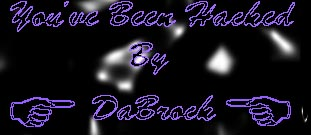

When I said an 18 Only to Enter Link. I meant a little more than that.
Go to a real page and find out how they do it. No Samples. No
Uncensored pictures on the main page. Theirs no point to having
an 18 only to enter link on the same page as the thing you're supposed
to be blocking from little childrens eyes (if you can call an 18 only
link prevention). I don't understand why the online sex industry is
allowed to do all that they do while kids aren't allowed to buy dirty
magazines in the store. I'm not advocating the sale of magazines to
children. I'm advocating some reform when it comes to online sex.
The best idea I think is credit card verification or something similar.
"But what about privacy?" you may ask. That is bullshit. I hate it
when people say they want more privacy and more freedom of speech.
The door swings both ways. The government is not the only people who
can twist the meaning of this right. And as for people who worry about
Spam? Mabye we should crack down on companies who spam also. For instance
AOL regularly deletes the accounts of users who spam. But these are
usually stolen accounts anyway and five minutes later the person is
spamming again. Don't go for the little fish spammer. Go for the source.
Go for the companies who pay the spammers. Anyway.. that's my two cents.
If you have any comments then write em in my guest book.
Now for the morons who run this page.
You know once your page is taken down then you're SUPPOSED to change
your password! That's the FIRST thing you do. Hopefully the chuckleheads
who run this site will realize that this time around. Greets to Rita, Kray
and Greg.
Also big greets to Magica Despell. Next time we go for the number one dime!

And His Eyes Had All The Seemings of a Demons That is Dreaming
My HitCounter
Don't Forget to Sign the Guestbook!
View Guestbook
Sign GuestBook